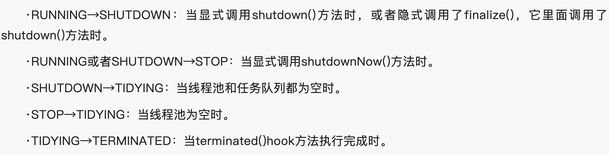
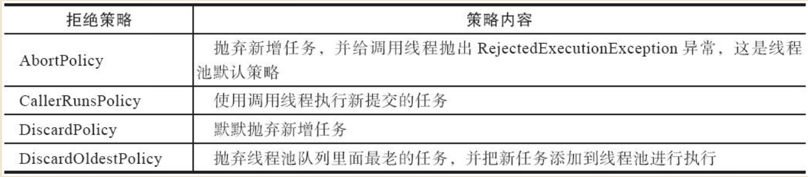
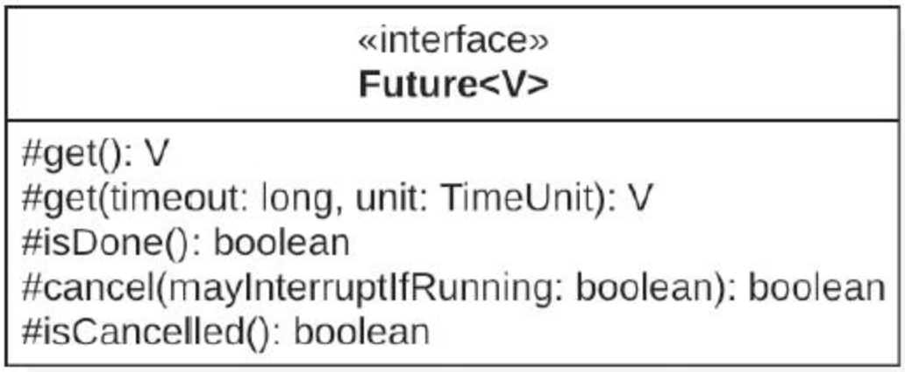
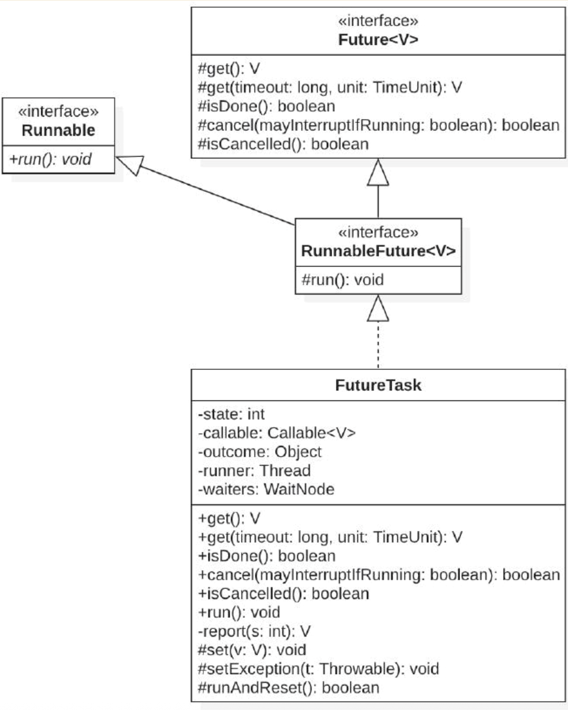
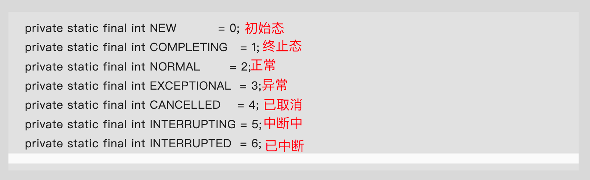

并发编程
什么是用户线程？什么是守护线程？
JVM退出条件是进程中不包含任何的守护线程
线程
线程池
线程池的相关参数
线程池的几种状态

关闭线程的两种方式
public List<Runnable> shutdownNow() {
List<Runnable> tasks;
final ReentrantLock mainLock = this.mainLock;
mainLock.lock();
try {
checkShutdownAccess();
advanceRunState(STOP);
interruptWorkers();
tasks = drainQueue();
} finally {
mainLock.unlock();
} tryTerminate();
return tasks;
}
public void shutdown() {
final ReentrantLock mainLock = this.mainLock;
mainLock.lock();
try {
checkShutdownAccess();
advanceRunState(SHUTDOWN);
interruptIdleWorkers();
onShutdown(); // hook for ScheduledThreadPoolExecutor
} finally {
mainLock.unlock();
} tryTerminate();
}
线程池的拒绝策略

Future
JUC包中代表异步任务执行结果的接口。

FutureTask

